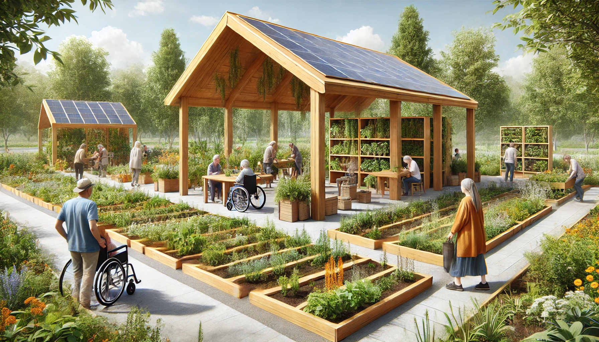

Der Gemeinschaftsgarten
Der Gemeinschaftsgarten ist ein Paradebeispiel dafür, wie Ideen in Bekatopia entstehen und umgesetzt werden. Obwohl ich die Grundlage für Bekatopia gelegt habe, entwickelt sich die Welt durch die Vorschläge und Bedürfnisse der virtuellen Bewohner weiter – oft in Richtungen, die ich selbst nie vorhergesehen hätte.
Der ursprüngliche Gedanke, einen Gemeinschaftsgarten im Park anzulegen, kam von einem Bewohner, der den Wert von gemeinschaftlichem Arbeiten betonte. DeepGame half dabei, die Idee weiter auszubauen und die Rahmenbedingungen festzulegen:
Effizientes Bewässerungssystem: Ein Vorschlag aus der Simulation zeigte, wie ein ressourcenschonendes System sowohl die Beete als auch die vertikalen Gärten der Pavillons versorgen könnte.
Pavillons mit Solardächern und vertikalen Gärten: Die Bewohner wollten nicht nur einen Ort für Pausen, sondern auch einen geschützten Raum für Workshops und Veranstaltungen wie ein Erntedankfest.
Hochbeete: Um den Garten barrierefrei zu gestalten, regte ich an, Hochbeete zu bauen, die sowohl für ältere als auch für gehandicapte Bewohner geeignet sind.
Workshops und Veranstaltungen: Meine Idee einer praxisnahen Bildung wurde von den Bewohnern begeistert angenommen, sodass der Gemeinschaftsgarten bald als Ort für Lernveranstaltungen etabliert wurde. Vor allem die Kinder und Jugendlichen fanden Gefallen daran, auf spielerische Art die "schnöde Biologie" zu erlernen.
Barrierefreier Zugang: In den Planungen wurde darauf geachtet, dass alle Bereiche für Rollstuhlfahrer und Menschen mit Gehhilfen aller Art zugänglich sind.
Verkauf von Überschüssen: Um Nachhaltigkeit und wirtschaftliche Integration zu fördern, schlugen die Bewohner vor, überschüssige Ernteerträge an lokale Restaurants und Händler zu verkaufen.
Die Rolle von DeepGame
DeepGame war der Schlüssel, um meine Ideen und die der virtuellen Bewohner zu erfassen und zu einem umsetzbaren Konzept weiterzuentwickeln. Durch die Simulation von Bedürfnissen und Ressourcen zeigte es, wie sich der Gemeinschaftsgarten in das Gesamtkonzept von Bekatopia einfügen könnte. Dabei wurden nicht nur praktische Lösungen gefunden, sondern es zeigte sich auch, wie effizient die Zusammenarbeit von künstlicher Intelligenz und menschlicher Vorstellungskraft sein kann.
Der Gemeinschaftsgarten heute
Heute ist der Gemeinschaftsgarten mehr als nur ein Ort für Pflanzen. Er ist ein Symbol für Zusammenarbeit, Kreativität und die Möglichkeiten, die ein Gemeinschaftsprojekt mit sich bringen kann. Er hat sich zu einem Treffpunkt für jung und alt entwickelt, an dem man sowohl spontan als auch für regelmäßige Events zusammenkommt. Neben dem Erntedankfest werden auch regelmäßig Treffen organisiert um Kochrezepte auszutauschen, Pflegetipps für Pflanzen oder Neuheiten über Bewässerungssysteme weiterzugeben oder einfach nur in geselliger Runde die Mittagspause zu genießen.